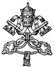

DECREE OF EXCOMMUNICATION
"Dominus Marcellus Lefebvre"From the Office of the Congregation for Bishops 1 July 1988 Monsignor Marcel Lefebvre, Archbishop-Bishop Emeritus of Tulle, notwithstanding the formal canonical warning of 17 June last and the repeated appeals to desist from his intention, has performed a schismatical act by the episcopal consecration of four priests, without pontifical mandate and contrary to the will of the Supreme Pontiff, and has therefore incurred the penalty envisaged by Canon 1364, paragraph 1, and canon 1382 of the Code of Canon Law. Having taken account of all the juridical effects, I declare that the above mentioned Monsignor Marcel Lefebvre, and Bernard Fellay, Bernard Tissier de Mallerais, Richard Williamson and Alfonso de Galarreta have incurred ipso facto excommunication latae sententiae reserved to the Apostolic See. Moreover, I declare that Monsignor Antonio de Castro Mayer, Bishop emeritus of Campos, since he took part directly in the liturgical celebration as co-consecrator and adhered publicly to the schismatical act, has incurred excommunication latae sententiae as envisaged by canon 1364, paragraph 1. The priests and faithful are warned not to support the schism of Monsignor Lefebvre, otherwise they shall incur ipso facto the very grave penalty of excommunication. From the Office of the Congregation for Bishops, 1 July 1988.
+ BERNARDINUS Card. GANTIN
Prefect of the Congregation for Bishops
|